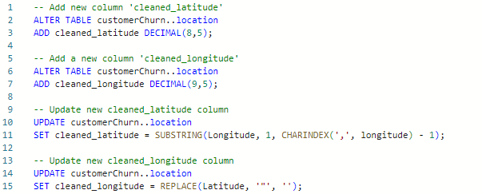
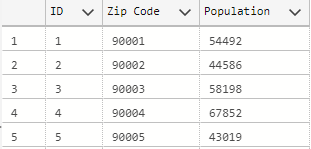
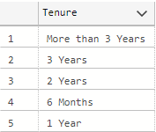
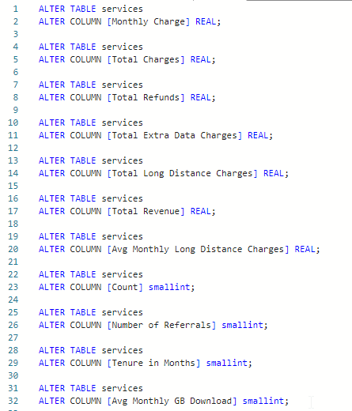
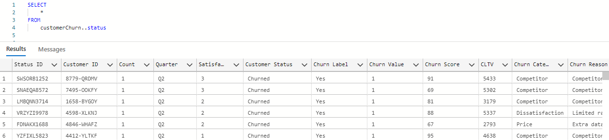
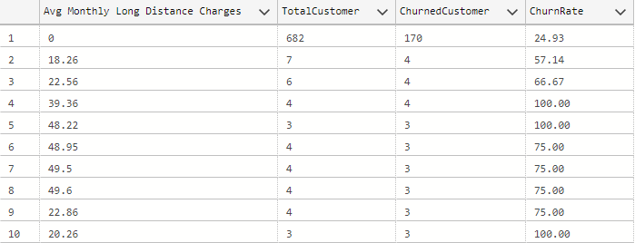
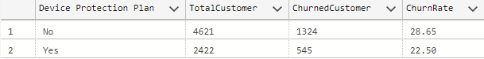
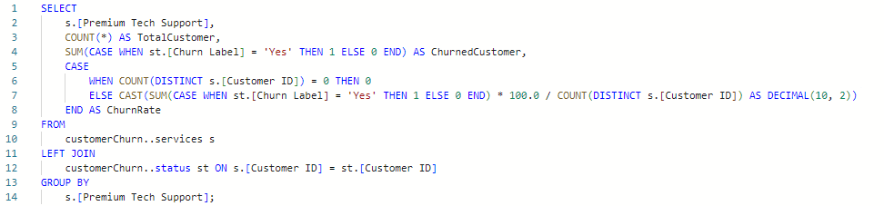
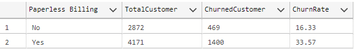
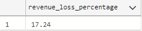

You can view the whole code here.
Introduction:
Customer churn refers to the phenomenon where customers cease their relationship with a company,
stop using its products or services, and potentially move to a competitor. It is a critical metric for
businesses, particularly in industries with subscription-based models, such as telecommunications, software
services, and more.
stop using its products or services, and potentially move to a competitor. It is a critical metric for
businesses, particularly in industries with subscription-based models, such as telecommunications, software
services, and more.
Importance of Customer Churn Analysis:
sustainability of a business. A high churn rate can impact revenue significantly.
Analyzing churn helps identify areas for improvement to retain customers and their revenue.
Churn analysis helps businesses focus on strategies to retain customers and maximize the return on investment.
services, or customer experience that need improvement. This contributes to overall customer satisfaction.
weaknesses. This knowledge is crucial for maintaining a competitive edge in the market.
factors leading to churn, businesses can implement preventive measures proactively.
expectations. This information guides businesses in enhancing their offerings.
effective customer retention strategies. These could include personalized marketing, loyalty programs, or improved customer support.
assumptions, businesses can use analytical insights to formulate strategies.
Addressing the underlying issues can protect and enhance the brand image.
About the Dataset:
The Telco Customer Churn dataset provides insights into a fictional telecommunications company that offered
home phone
and Internet services to 7043 customers in California across three quarters (Q1, Q2, and Q3).
he data indicates customer retention,
churn, and new sign-ups. Kaggle is the source of this dataset.
Data Structure:
CustomerID: Unique identifier for each customer.
Count: Value used for reporting/dashboarding to sum up the number of customers in a filtered set.
Gender: Customer's gender (Male, Female)
Age: Customer's current age at the end of the fiscal quarter.
Senior Citizen: Indicates if the customer is 65 or older (Yes, No).
Dependents: Indicates if the customer lives with any dependents (Yes, No)
Number of Dependents: Number of dependents living with the customer.
CustomerID: Unique identifier for each customer.
Count: Value used for reporting/dashboarding to sum up the number of customers in a filtered set.
Country, State, City: Customer's primary residence details.
Zip Code: Customer's primary residence zip code.
Latitude, Longitude: Individual latitude and longitude of the customer’s primary residence.
ID: Unique identifier for each row.
Zip Code: Customer's primary residence zip code.
Population: Current population estimate for the entire zip code area.
CustomerID: Unique identifier for each customer.
Count: Value used for reporting/dashboarding to sum up the number of customers in a filtered set.
Quarter: Fiscal quarter (Q1, Q2, Q3).
Referred a Friend: Indicates if the customer has ever referred a friend or family member to this company: Yes, No
Number of Referrals: Indicates the number of referrals to date that the customer has made.
Tenure in Months: Indicates the total amount of months that the customer has been with the company.
Offer: Identifies the last marketing offer that the customer accepted, if applicable.
Phone Service: Indicates if the customer subscribes to home phone service with the company: Yes, No
Avg Monthly Long Distance Charges: Indicates the customer’s average long distance charges.
Multiple Lines: Indicates if the customer subscribes to multiple telephone lines with the company: Yes, No
Internet Service: Indicates if the customer subscribes to Internet service with the company: No, DSL, Fiber Optic, Cable.
Avg Monthly GB Download: Indicates the customer’s average download volume in gigabytes.
Online Security: Indicates if the customer subscribes to an additional online security service provided by the company: Yes, No
Online Backup: Indicates if the customer subscribes to an additional online backup service provided by the company: Yes, No
Device Protection Plan: Indicates if the customer subscribes to an additional device protection plan for their Internet equipment.
Premium Tech Support: Indicates if the customer subscribes to an additional technical support plan: Yes, No
Streaming TV: Indicates if the customer uses their Internet service to stream television programing from a third party provider.
Streaming Movies: Indicates if the customer uses their Internet service to stream movies from a third party provider: Yes, No.
Streaming Music: Indicates if the customer uses their Internet service to stream music from a third party provider: Yes, No.
Unlimited Data: Indicates if the customer has paid an additional monthly fee to have unlimited data downloads/uploads: Yes, No
Paperless Billing: Indicates if the customer has chosen paperless billing: Yes, No
Payment Method: Indicates how the customer pays their bill: Bank Withdrawal, Credit Card, Mailed Check
Monthly Charge: Indicates the customer’s current total monthly charge for all their services from the company.
Total Charges: Indicates the customer’s total charges, calculated to the end of the quarter specified above.
Total Refunds: Indicates the customer’s total refunds, calculated to the end of the quarter specified above.
Total Extra Data Charges: Indicates the customer’s total charges for extra data downloads above those specified in their plan.
Total Long Distance Charges: Indicates the customer’s total charges for long distance above those specified in their plan.
CustomerID: Unique identifier for each customer.
Count: Value used for reporting/dashboarding to sum up the number of customers in a filtered set.
Quarter: Fiscal quarter (Q1, Q2, Q3).
Satisfaction Score: Customer's overall satisfaction rating (1 to 5).
Customer Status: Indicates if the customer churned, stayed, or joined.
Churn Label: Yes = the customer left the company this quarter. No = the customer remained with the company.
Churn Value: 1 = the customer left the company this quarter. 0 = the customer remained with the company.
Churn Score: A value from 0-100 that is calculated using the predictive tool IBM SPSS Modeler.
Churn Score Category: A calculation that assigns a Churn Score to various categories
CLTV: Customer Lifetime Value. A predicted CLTV is calculated using corporate formulas and existing data.
Churn Category: A high-level category for the customer’s reason for churning: Attitude, Competitor, Dissatisfaction, Other, Price.
Churn Reason: A customer’s specific reason for leaving the company. Directly related to Churn Category.
Demographics:
Location:
Population:
Services:
Status:
DATA CLEANING:


United Kingdom
Demographics:
Display the top 10 rows of the Demographics table:
Check the data types of columns in the Demographics table:
Result:
Assign data type to columns as necessary:
Result:
Create a new column for Age Group and add new Age Group 'Middle-aged':
Result:
Drop old Under 30 and Senior Citizen columns:
Result:
Rename Married column to Marital Status:
Result:
Location:
Display Location table:
Add new columns 'cleaned_latitude' and 'cleaned_longitude':

Result:
Check the data types:
Change data types of Count and Zip Code to smallint and int respectively:
Result:
Remove unnecessary columns:
Rename Column cleaned latitude and cleaned longitude columns:
Cleaned Location Table:
Population:
Display Population table:
Remove symbols from population values:


Check the data types:
Change data types of ID, Zip Code, and Population columns to smallint and int respectively:
Result:
Cleaned Population Table:

Services:
Display Services table columns and Data types:
Result:
Create a new column 'Tenure' to segment 'Tenure in Months' into different groups:
Result:

Change columns data types:

Result:
Status:
Display Status table columns and Data types:

Add new column 'Satisfaction Score Label':
Result:
Add new column 'CLTV Category':
Result:
Check columns data types:
Change columns data types:
Result:
Check for missing values:
No missing value.
DATA EXPLORATIONS
Calculating total customers, churned customers, and churn rate:
Result:
The analysis for this dataset reveals that out of a total customer count of 7,043, 1,869 customers
have
churned, resulting in a churn rate of 26.54%. This indicates a significant proportion of customers
discontinuing the service, emphasizing the importance of implementing effective retention strategies
to mitigate churn and enhance overall customer satisfaction.
churned, resulting in a churn rate of 26.54%. This indicates a significant proportion of customers
discontinuing the service, emphasizing the importance of implementing effective retention strategies
to mitigate churn and enhance overall customer satisfaction.
Calculating number of churned customers by gender:
Result:
The churn analysis indicates a comparable churn rate between male and female customers, both around
26%.
This suggests the need for universal retention strategies, without a specific gender focus, to enhance overall customer loyalty.
This suggests the need for universal retention strategies, without a specific gender focus, to enhance overall customer loyalty.
Calculating churn rate by Age Group:
Result:
The analysis indicates varied churn rates across age groups. Middle-aged customers show a 24.10% churn, seniors have
a higher churn at 36.46%, while those under 30 exhibit a relatively lower churn of 21.70%. Tailored retention strategies may be effective,
especially for senior citizens, to reduce overall churn and enhance customer satisfaction.
a higher churn at 36.46%, while those under 30 exhibit a relatively lower churn of 21.70%. Tailored retention strategies may be effective,
especially for senior citizens, to reduce overall churn and enhance customer satisfaction.
Calculating average age of churned customers:
Result:
The average age of churned customers is 49 years.
Calculating churn rate by Marital Status:
Result:
The analysis reveals differing churn rates based on marital status. Married customers exhibit a lower churn rate at 19.66%,
while single customers have a higher churn rate of 32.96%.
This suggests a potential opportunity to explore targeted retention strategies for single customers to mitigate churn and
improve overall customer retention.
while single customers have a higher churn rate of 32.96%.
This suggests a potential opportunity to explore targeted retention strategies for single customers to mitigate churn and
improve overall customer retention.
Calculating churn rate by Dependents:
Result:
The analysis shows a substantial contrast in churn rates based on the presence of dependents.
Customers without
dependents have a higher churn rate at 32.55%, whereas those with dependents exhibit a significantly
lower churn rate of 6.52%. This suggests that customer retention efforts may need to be particularly
focused on customers without dependents to address and reduce the higher churn in this group.
dependents have a higher churn rate at 32.55%, whereas those with dependents exhibit a significantly
lower churn rate of 6.52%. This suggests that customer retention efforts may need to be particularly
focused on customers without dependents to address and reduce the higher churn in this group.
Calculating churn rate by Geographical zone:
Result:
The churn analysis by geographic region indicates similar churn rates for the North (25.18%) and Other (25.27%)
regions, while the South region has a slightly higher churn rate at 30.43%. Implementing region-specific retention
strategies, especially in the South, may be beneficial for reducing overall churn and enhancing customer satisfaction.
regions, while the South region has a slightly higher churn rate at 30.43%. Implementing region-specific retention
strategies, especially in the South, may be beneficial for reducing overall churn and enhancing customer satisfaction.
Calculating churn rate by Cities:
Result:
1. San Diego - Churn Rate: 64.91%
2. Fallbrook - Churn Rate: 60.47%
3. Temecula - Churn Rate: 57.89%
4. Escondido - Churn Rate: 31.37%
5. San Francisco - Churn Rate: 29.81%
These cities might be the focus of attention for addressing customer resentment tragedy, as they have relatively
high churn rates, indicating a significant proportion of customers leaving. Strategies to improve customer satisfaction,
identify pain points, and enhance service delivery may be beneficial in these areas.
2. Fallbrook - Churn Rate: 60.47%
3. Temecula - Churn Rate: 57.89%
4. Escondido - Churn Rate: 31.37%
5. San Francisco - Churn Rate: 29.81%
These cities might be the focus of attention for addressing customer resentment tragedy, as they have relatively
high churn rates, indicating a significant proportion of customers leaving. Strategies to improve customer satisfaction,
identify pain points, and enhance service delivery may be beneficial in these areas.
Calculating churn rate Population estimates:
Result:
The analysis results provide insights into customer churn rates across different zip codes in the San Diego area. Notably,
Fallbrook (Zip Code: 92028) has the highest population among the listed areas and exhibits a relatively lower churn rate of
60.47%, suggesting better customer retention. On the other hand, several San Diego zip codes, such as 92122, 92117, and 92126, experience
higher churn rates above 87%, indicating potential challenges in retaining customers in these areas. The data underscores the
importance of investigating the underlying factors contributing to customer churn< in specific regions, especially in San Diego,
to develop targeted strategies for customer retention.
Fallbrook (Zip Code: 92028) has the highest population among the listed areas and exhibits a relatively lower churn rate of
60.47%, suggesting better customer retention. On the other hand, several San Diego zip codes, such as 92122, 92117, and 92126, experience
higher churn rates above 87%, indicating potential challenges in retaining customers in these areas. The data underscores the
importance of investigating the underlying factors contributing to customer churn< in specific regions, especially in San Diego,
to develop targeted strategies for customer retention.
investigating why there are high churn rates in the cities above:
Result:
The analysis reveals a consistent trend across different zip codes, where the primary reason for customer
churn
is a competitor making a better offer. In all cases, customers appear to be swayed by offerings from
competitors, resulting in a high churn rate. This insight suggests that there might be intense competition in the
market, and
customers are quick to switch providers when presented with more attractive alternatives. To address
this challenge, businesses in these areas should consider reevaluating and enhancing their value propositions, possibly
by offering competitive pricing, additional services, or loyalty programs. Understanding the specific aspects of competitors'
offers that appeal to customers could guide the development of effective retention strategies tailored to each location.
is a competitor making a better offer. In all cases, customers appear to be swayed by offerings from
competitors, resulting in a high churn rate. This insight suggests that there might be intense competition in the
market, and
customers are quick to switch providers when presented with more attractive alternatives. To address
this challenge, businesses in these areas should consider reevaluating and enhancing their value propositions, possibly
by offering competitive pricing, additional services, or loyalty programs. Understanding the specific aspects of competitors'
offers that appeal to customers could guide the development of effective retention strategies tailored to each location.
Churn Rate by Quarters:
Result:
The analysis of customer churn over different quarters reveals varying churn rates. In Q2, the churn rate is
notably higher at 32.16%, indicating a higher proportion of customers leaving during that period. However, there
is a significant improvement in Q3, with a reduced churn rate of 18.97%. Q1 falls in between, with a churn rate of 20.83%.
This suggests that there might be seasonal or time-dependent factors influencing customer retention. Businesses should delve
deeper into the specific conditions and strategies employed during each quarter to identify patterns and implement targeted
retention measures during periods of higher vulnerability, particularly in Q2.
notably higher at 32.16%, indicating a higher proportion of customers leaving during that period. However, there
is a significant improvement in Q3, with a reduced churn rate of 18.97%. Q1 falls in between, with a churn rate of 20.83%.
This suggests that there might be seasonal or time-dependent factors influencing customer retention. Businesses should delve
deeper into the specific conditions and strategies employed during each quarter to identify patterns and implement targeted
retention measures during periods of higher vulnerability, particularly in Q2.
Churn Rate by Referrals:
Result:
Customers referred by a friend ('Yes') have a lower churn rate at 19.37%, suggesting the positive impact of referrals on
retention. In contrast, those not referred ('No') exhibit a higher churn rate of 32.58%. Strengthening referral programs
could be a valuable strategy for reducing churn and enhancing customer loyalty.
retention. In contrast, those not referred ('No') exhibit a higher churn rate of 32.58%. Strengthening referral programs
could be a valuable strategy for reducing churn and enhancing customer loyalty.
Churn Rate by Tenure:
Result:
Customers with more than 3 years of tenure show a significantly lower churn rate at 11.93%, emphasizing the positive
correlation between longer tenure and customer retention. On the contrary, customers with a 6-month tenure exhibit a
higher churn rate at 53.33%. Focusing on strategies to enhance early customer engagement and loyalty during the initial
months could be crucial for reducing churn.
correlation between longer tenure and customer retention. On the contrary, customers with a 6-month tenure exhibit a
higher churn rate at 53.33%. Focusing on strategies to enhance early customer engagement and loyalty during the initial
months could be crucial for reducing churn.
Churn Rate by Offer Types:
Result:
The analysis shows varying churn rates based on different offers. "Offer A" and "Offer B" exhibit lower churn rates at
6.73% and 12.26%, respectively, indicating that these offers may contribute to customer retention. Conversely, "Offer E"
has a high churn rate of 52.92%, suggesting it might not be resonating well with customers. Further exploration into
the characteristics and effectiveness of each offer can guide strategies to enhance customer loyalty.
6.73% and 12.26%, respectively, indicating that these offers may contribute to customer retention. Conversely, "Offer E"
has a high churn rate of 52.92%, suggesting it might not be resonating well with customers. Further exploration into
the characteristics and effectiveness of each offer can guide strategies to enhance customer loyalty.
Churn Rate by Phone Services:
Result:
The analysis indicates that customers with phone service have a slightly higher churn rate (26.71%) compared
to those without phone service (24.93%). Understanding the reasons behind this difference, such as customer
satisfaction with the phone< service or additional features associated with it, could help optimize customer
retention strategies.
to those without phone service (24.93%). Understanding the reasons behind this difference, such as customer
satisfaction with the phone< service or additional features associated with it, could help optimize customer
retention strategies.
Churn Rate by Internet Service:
Result:
Customers with internet service have a higher churn rate (31.83%) compared to those without (7.40%).
Addressing issues related to internet service, such as speed or pricing, can be crucial for improving
customer retention.
Addressing issues related to internet service, such as speed or pricing, can be crucial for improving
customer retention.
Churn Rate by Average Monthly GB Download:
Result:
Customers with higher average monthly GB downloads, especially in the range of 27 to 30 GB, exhibit elevated
churn rates, suggesting a correlation between data usage patterns and customer attrition. Further analysis on
the reasons behind this trend could provide insights into improving service offerings or addressing customer
needs in these usage brackets.
churn rates, suggesting a correlation between data usage patterns and customer attrition. Further analysis on
the reasons behind this trend could provide insights into improving service offerings or addressing customer
needs in these usage brackets.
Churn Rate by Average Long Distance Charges:
Result:

Customers with higher average monthly long-distance charges, particularly in the range of 39.36 to 20.26, demonstrate
significantly elevated churn rates. This suggests a potential relationship between long-distance charges and customer
attrition. Further investigation into the specific factors influencing these charges and corresponding churn rates
could inform strategies to mitigate customer turnover in this segment.
significantly elevated churn rates. This suggests a potential relationship between long-distance charges and customer
attrition. Further investigation into the specific factors influencing these charges and corresponding churn rates
could inform strategies to mitigate customer turnover in this segment.
Churn Rate by Multiple lines:
Result:
Customers with multiple lines (Yes) exhibit a slightly higher churn rate (28.61%) compared to those without multiple lines
(No) with a churn rate of 25.02%. While the difference is not drastic, it could indicate that the presence of multiple lines
may influence customer retention to some extent. Further exploration of customer needs and satisfaction within each segment
could provide insights into optimizing retention strategies.
(No) with a churn rate of 25.02%. While the difference is not drastic, it could indicate that the presence of multiple lines
may influence customer retention to some extent. Further exploration of customer needs and satisfaction within each segment
could provide insights into optimizing retention strategies.
Churn Rate by Internet Type:
Result:
The churn rate varies significantly depending on the internet type. Customers with Fiber Optic have a high churn rate
of 40.72%, while DSL customers have a lower churn rate of 18.58%. Cable and No Internet customers fall in between,
with churn rate of 25.66% and 7.40%, respectively. Understanding the reasons behind this divergence can help in tailoring
retention strategies for different internet service types.
of 40.72%, while DSL customers have a lower churn rate of 18.58%. Cable and No Internet customers fall in between,
with churn rate of 25.66% and 7.40%, respectively. Understanding the reasons behind this divergence can help in tailoring
retention strategies for different internet service types.
Churn Rate by Online Security:
Result:
Customers with Online Security feature have a lower churn rate (14.61%) compared to those without it (31.33%).
Implementing or promoting online security measures might contribute to customer retention.
Implementing or promoting online security measures might contribute to customer retention.
Churn Rate by Online Backup:
Result:
Customers with Online Backup services exhibit a lower churn rate (21.53%) compared to those without it (29.17%).
Providing and emphasizing the importance of online backup may positively impact customer retention.
Providing and emphasizing the importance of online backup may positively impact customer retention.
Churn Rate by Device Protection Plan:
Result:

Customers with a Device Protection Plan have a lower churn rate (22.50%) compared to those without it (28.65%).
This suggests that offering and promoting device protection plans could contribute to improved customer retention.
This suggests that offering and promoting device protection plans could contribute to improved customer retention.
Churn Rate by Premium Tech Support:

Result:
Customers with Premium Tech Support have a significantly lower churn rate (15.17%) compared to those without it (31.19%).
This indicates that the availability of premium tech support might positively impact customer satisfaction and retention.
This indicates that the availability of premium tech support might positively impact customer satisfaction and retention.
Churn Rate by Streaming TV:
Result:
Customers with Streaming TV exhibit a slightly higher churn rate (30.07%) compared to those without it (24.33%).
This suggests that offering or not offering Streaming TV services may have a subtle influence on customer
retention, with the absence of such services correlating with a slightly lower churn rate.
This suggests that offering or not offering Streaming TV services may have a subtle influence on customer
retention, with the absence of such services correlating with a slightly lower churn rate.
Churn Rate by Streaming Movies:
Result:
Customers with Streaming Movies have a higher churn rate (29.94%) compared to those without it (24.38%).
This indicates that the presence of Streaming Movies services might contribute to a slightly elevated churn
rate among customers, suggesting a potential area for service improvement or customer engagement.
This indicates that the presence of Streaming Movies services might contribute to a slightly elevated churn
rate among customers, suggesting a potential area for service improvement or customer engagement.
Churn Rate by Streaming Music:
Result:
Customers with Streaming Music services have a higher churn rate (29.26%) compared to those without it (25.05%).
This suggests that the availability of Streaming Music might influence customer retention, indicating a need to assess
and potentially enhance this service to address customer satisfaction and reduce churn.
This suggests that the availability of Streaming Music might influence customer retention, indicating a need to assess
and potentially enhance this service to address customer satisfaction and reduce churn.
Churn Rate by Unlimited Data:
Result:
Customers with Unlimited Data have a significantly higher churn rate (31.65%) compared to those without it (15.97%).
This implies that the Unlimited Data feature might be a contributing factor to customer attrition. Further
investigation into customer feedback and preferences regarding data usage could help identify
potential improvements or alternative offerings to reduce churn.
This implies that the Unlimited Data feature might be a contributing factor to customer attrition. Further
investigation into customer feedback and preferences regarding data usage could help identify
potential improvements or alternative offerings to reduce churn.
Customers Churn Reasons by Unlimited Data:
Result:
The churn reasons for customers with Unlimited Data ('Yes') cover a range of factors, including competition-related aspects
such as better devices and offers from competitors. Additionally, customer dissatisfaction with support personnel, service
provider attitude, product, pricing, and network reliability are among the reasons contributing to churn. Addressing these
specific concerns through targeted improvements in device offerings, pricing strategies, customer support training, and
network reliability could potentially help in reducing churn among customers with Unlimited Data.
such as better devices and offers from competitors. Additionally, customer dissatisfaction with support personnel, service
provider attitude, product, pricing, and network reliability are among the reasons contributing to churn. Addressing these
specific concerns through targeted improvements in device offerings, pricing strategies, customer support training, and
network reliability could potentially help in reducing churn among customers with Unlimited Data.
Customers Churn Reasons by Contract Type:
Result:
Customers with Month-to-Month contracts exhibit a significantly higher churn rate (45.84%) compared to those with
One-Year (10.71%) and Two-Year (2.55%) contracts. Long-term contract commitments appear to correlate
with lower churn rates, suggesting that offering incentives or promotions to encourage longer-term
contracts may contribute to customer retention. Understanding the factors driving churn in Month-to-Month contracts
and addressing them could be crucial for improving overall customer retention.
One-Year (10.71%) and Two-Year (2.55%) contracts. Long-term contract commitments appear to correlate
with lower churn rates, suggesting that offering incentives or promotions to encourage longer-term
contracts may contribute to customer retention. Understanding the factors driving churn in Month-to-Month contracts
and addressing them could be crucial for improving overall customer retention.
Churn Rate by Papperless Billing:
Result:

Customers opting for Paperless Billing experience a notable difference in churn rates, with a higher churn rate of
33.57% compared to 16.33% for those with traditional billing methods. This indicates that there might be factors
related to Paperless Billing, such as user experience, pricing, or service quality, contributing to a higher
likelihood of churn. Analyzing and addressing these specific issues could be essential for improving customer
retention among Paperless Billing users.
33.57% compared to 16.33% for those with traditional billing methods. This indicates that there might be factors
related to Paperless Billing, such as user experience, pricing, or service quality, contributing to a higher
likelihood of churn. Analyzing and addressing these specific issues could be essential for improving customer
retention among Paperless Billing users.
Churn Rate by Payment Method:
Result:
The data reveals notable differences in churn rates based on payment methods. Customers using Bank Withdrawal and Mailed Check
exhibit higher churn rates at 34.00% and 36.88%, respectively, compared to the lower churn rate of 14.48% for Credit Card
payments. Streamlining and incentivizing the usage of more stable payment methods, such as Credit Cards, could potentially
mitigate churn and improve overall customer retention.
exhibit higher churn rates at 34.00% and 36.88%, respectively, compared to the lower churn rate of 14.48% for Credit Card
payments. Streamlining and incentivizing the usage of more stable payment methods, such as Credit Cards, could potentially
mitigate churn and improve overall customer retention.
Total Charges by Payment Method:
Result:
Analyzing the churn data alongside total charges by payment method, it's apparent that Bank Withdrawal, despite having the
highest total
charges at $2,153,188.15, also has the highest churn rate (34.00%). On the contrary, Credit Card, with a lower total charge
of $641,666.70, has a substantially lower churn rate (14.48%). This suggests an interesting dynamic where higher total charges do
not necessarily correlate with lower churn rates. Further investigation into the reasons behind churn in each payment method
could provide insights into potential areas for improvement and customer retention strategies.
charges at $2,153,188.15, also has the highest churn rate (34.00%). On the contrary, Credit Card, with a lower total charge
of $641,666.70, has a substantially lower churn rate (14.48%). This suggests an interesting dynamic where higher total charges do
not necessarily correlate with lower churn rates. Further investigation into the reasons behind churn in each payment method
could provide insights into potential areas for improvement and customer retention strategies.
Top Churn Reasons by Bank withdrawal Payment Method:
Result:
Given the detailed churn reasons for customers using Bank Withdrawal as their payment method, it's evident that competitors play a
significant role in the churn process. Better devices, more attractive offers, and higher download speeds from competitors seem to
be influencing factors. Additionally, aspects related to customer service, such as the attitude of support personnel and service
providers, as well as product dissatisfaction and pricing concerns, contribute to churn. Addressing these specific pain points
could be crucial in devising strategies to retain Bank Withdrawal customers.
significant role in the churn process. Better devices, more attractive offers, and higher download speeds from competitors seem to
be influencing factors. Additionally, aspects related to customer service, such as the attitude of support personnel and service
providers, as well as product dissatisfaction and pricing concerns, contribute to churn. Addressing these specific pain points
could be crucial in devising strategies to retain Bank Withdrawal customers.
Churn Rate by Refunds:
Result:
The data indicates that customers who did not request a refund have a higher churn rate (27.03%) compared to those who requested a
refund (20.38%). While this might seem counterintuitive at first glance, it could suggest that customers who sought refunds had
specific issues that were addressed, leading to a lower likelihood of churn. Further investigation into the nature of refund requests
and the reasons behind them could provide valuable insights into customer satisfaction and retention strategies.
refund (20.38%). While this might seem counterintuitive at first glance, it could suggest that customers who sought refunds had
specific issues that were addressed, leading to a lower likelihood of churn. Further investigation into the nature of refund requests
and the reasons behind them could provide valuable insights into customer satisfaction and retention strategies.
Minumum, Maximum, Average, and Sum of Refunds by Churned Customers:
Result:
The refund-related statistics provide additional context. The data shows a range of refund amounts from $0 to $49.57, with an average
refund of $1.52. The total refund amount across all transactions is $2838.98. Understanding the distribution and average
amount of refunds can help in assessing the financial impact and identifying patterns related
to customer satisfaction and retention.
refund of $1.52. The total refund amount across all transactions is $2838.98. Understanding the distribution and average
amount of refunds can help in assessing the financial impact and identifying patterns related
to customer satisfaction and retention.
Churn Rate by Satisfaction Score:
Result:
The satisfaction score analysis reveals that all customers labeled as "Very Dissatisfied" or "Dissatisfied" have churned, resulting
in a 100% churn rate for these categories. However, among customers labeled as "Neutral," only 16.10% have churned. Notably, all
customers labeled as "Satisfied" or "Very Satisfied" have not churned, showing a 0% churn rate. This underscores the significance
of customer satisfaction in retention efforts, with a higher satisfaction score correlating with lower churn rates.
in a 100% churn rate for these categories. However, among customers labeled as "Neutral," only 16.10% have churned. Notably, all
customers labeled as "Satisfied" or "Very Satisfied" have not churned, showing a 0% churn rate. This underscores the significance
of customer satisfaction in retention efforts, with a higher satisfaction score correlating with lower churn rates.
Minimum, Maximum, and Average Satisfaction Score:
Result:
The satisfaction score analysis indicates a range from a minimum score of 1 to a maximum score of 3, with an average score of 1.
This suggests that the satisfaction scores are clustered towards the lower end of the scale, indicating a predominantly
dissatisfied or neutral sentiment among customers. The company may benefit from investigating and addressing the factors
contributing to lower satisfaction scores to enhance overall customer experience and reduce churn.
This suggests that the satisfaction scores are clustered towards the lower end of the scale, indicating a predominantly
dissatisfied or neutral sentiment among customers. The company may benefit from investigating and addressing the factors
contributing to lower satisfaction scores to enhance overall customer experience and reduce churn.
Top Churned Reasons by Satisfaction Score:
Result:
The churn reasons associated with different satisfaction score labels provide valuable insights into the factors influencing customer
satisfaction. Notably, customers who are very dissatisfied often cite reasons such as competitor offerings (better devices or better
offers), attitude of support personnel, and product dissatisfaction. Addressing these specific pain points, improving support
interactions, and enhancing product features could contribute to a more positive customer experience and potentially reduce churn,
particularly among those with lower satisfaction scores.
satisfaction. Notably, customers who are very dissatisfied often cite reasons such as competitor offerings (better devices or better
offers), attitude of support personnel, and product dissatisfaction. Addressing these specific pain points, improving support
interactions, and enhancing product features could contribute to a more positive customer experience and potentially reduce churn,
particularly among those with lower satisfaction scores.
Churn Rate by Churn Score:
Result:
The churn score groups provide a segmentation based on the likelihood of customer churn, as predicted by the IBM SPSS Modeler.
Notably, a significant proportion of customers fall into the "Very High" churn score group, indicating a high likelihood of
churning. It's interesting to observe that there are customers in the "High," "Medium," and "Low" score groups who have not
churned, presenting an opportunity to investigate what factors contribute to customer retention within these segments. Analyzing
the characteristics or behaviors of non-churning customers in these groups could uncover strategies for mitigating churn risk.
Notably, a significant proportion of customers fall into the "Very High" churn score group, indicating a high likelihood of
churning. It's interesting to observe that there are customers in the "High," "Medium," and "Low" score groups who have not
churned, presenting an opportunity to investigate what factors contribute to customer retention within these segments. Analyzing
the characteristics or behaviors of non-churning customers in these groups could uncover strategies for mitigating churn risk.
Minimum, Maximum, and Average Churn Score of Churned Customers:
Result:
The provided satisfaction score statistics reveal a relatively high average score, with customers generally falling within the
range of 65 to 96. The average score of 81 suggests a predominantly positive sentiment among customers. This positive trend is
encouraging, as higher satisfaction scores are typically associated with increased customer loyalty and reduced churn rates. It may be
beneficial to delve deeper into the specific factors contributing to this positive satisfaction, enabling the identification and reinforcement
of strategies that lead to customer satisfaction and retention.
range of 65 to 96. The average score of 81 suggests a predominantly positive sentiment among customers. This positive trend is
encouraging, as higher satisfaction scores are typically associated with increased customer loyalty and reduced churn rates. It may be
beneficial to delve deeper into the specific factors contributing to this positive satisfaction, enabling the identification and reinforcement
of strategies that lead to customer satisfaction and retention.
Churn Rate by Customer Lifetime Value:
Result:
The Customer Lifetime Value (CLTV) analysis indicates different segments based on customer value and their corresponding churn rates.
Notably, the "Medium High" and "Medium" categories exhibit relatively lower churn rates, suggesting that customers in these segments
are more likely to stay with the company over time. On the other hand, the "Low" and "Medium Low" categories have higher churn rates,
signaling potential challenges in retaining customers within these segments.
It is crucial to explore the factors contributing to the success of retaining customers in the "Medium High" and "Medium" categories.
Identifying and replicating effective strategies from these segments could be instrumental in mitigating churn in the "Low" and
"Medium Low" categories. Additionally, the "High" CLTV category, despite having a low churn rate, represents a smaller customer base.
Exploring opportunities to expand and nurture this segment further could contribute positively to overall CLTV and business profitability.
Notably, the "Medium High" and "Medium" categories exhibit relatively lower churn rates, suggesting that customers in these segments
are more likely to stay with the company over time. On the other hand, the "Low" and "Medium Low" categories have higher churn rates,
signaling potential challenges in retaining customers within these segments.
It is crucial to explore the factors contributing to the success of retaining customers in the "Medium High" and "Medium" categories.
Identifying and replicating effective strategies from these segments could be instrumental in mitigating churn in the "Low" and
"Medium Low" categories. Additionally, the "High" CLTV category, despite having a low churn rate, represents a smaller customer base.
Exploring opportunities to expand and nurture this segment further could contribute positively to overall CLTV and business profitability.
Churn Category and Churn Reasons:
Result:
Above are the Churn Categories and Churn Reasons.
Churn Reasons Count:
Result:
The churn reasons provide valuable insights into the factors driving customer attrition. Among these, "Competitor had better devices"
and "Competitor made better offer" are the leading reasons for churn, suggesting that competitive pricing and product offerings play a
significant role in customer retention.
Issues related to customer support, such as "Attitude of support person" and "Poor expertise of online support" also contribute to
churn. Addressing these areas by enhancing support quality and expertise could positively impact customer satisfaction and reduce
churn.
Price-related concerns, including "Price too high," emphasize the importance of competitive pricing strategies in retaining customers.
Strategic pricing adjustments or the introduction of value-added services could be explored to address this aspect.
The relatively high numbers in categories like "Don't know" and "Moved" indicate a need for improved communication and understanding of
customer needs. Implementing customer feedback mechanisms and targeted communication strategies may help reduce uncertainty and address
concerns.
The varied nature of churn reasons underscores the complexity of customer decision-making. A comprehensive approach that addresses both
product/service competitiveness and customer experience is essential for effective churn management.
and "Competitor made better offer" are the leading reasons for churn, suggesting that competitive pricing and product offerings play a
significant role in customer retention.
Issues related to customer support, such as "Attitude of support person" and "Poor expertise of online support" also contribute to
churn. Addressing these areas by enhancing support quality and expertise could positively impact customer satisfaction and reduce
churn.
Price-related concerns, including "Price too high," emphasize the importance of competitive pricing strategies in retaining customers.
Strategic pricing adjustments or the introduction of value-added services could be explored to address this aspect.
The relatively high numbers in categories like "Don't know" and "Moved" indicate a need for improved communication and understanding of
customer needs. Implementing customer feedback mechanisms and targeted communication strategies may help reduce uncertainty and address
concerns.
The varied nature of churn reasons underscores the complexity of customer decision-making. A comprehensive approach that addresses both
product/service competitiveness and customer experience is essential for effective churn management.
Churned Customers Minimum, Maximum, and Average Monthly Charges:
Result:
The analysis on monthly charges reveals a broad range, from a minimum of $18.85 to a maximum of $118.35, with an average monthly
charge of $74.44. This suggests diversity in pricing structures, catering to different customer needs. Understanding this range
can guide strategies for targeted pricing, ensuring competitiveness and value for customers across various segments.
charge of $74.44. This suggests diversity in pricing structures, catering to different customer needs. Understanding this range
can guide strategies for targeted pricing, ensuring competitiveness and value for customers across various segments.
Churned Customers Minimum, Maximum, Average, and Sum of Total Charges:
Result:
The assessment of total charges displays a varied landscape, ranging from $18.85 to $8,684.80. The average total charge is
$1,531.80,
accumulating to a sum of $139,130.85. This diversity indicates different customer spending patterns, emphasizing the importance of tailored
offerings and understanding customer segments for effective service and value provision.
accumulating to a sum of $139,130.85. This diversity indicates different customer spending patterns, emphasizing the importance of tailored
offerings and understanding customer segments for effective service and value provision.
Churned Customers Minimum, Maximum, Average, and Sum of Total Extra Charges:
Result:
The analysis of extra data charges reveals a spectrum from $0.00 to $150.00, with an average charge of $7.16. The cumulative sum of
extra data charges is $13,380.00. Understanding this range helps in formulating strategies to manage and possibly reduce extra
data charges, ensuring customer satisfaction and cost control.
extra data charges is $13,380.00. Understanding this range helps in formulating strategies to manage and possibly reduce extra
data charges, ensuring customer satisfaction and cost control.
Churned Customers Minimum, Maximum, Average, and Sum of Revenue Charges:
Result:
The revenue analysis showcases a revenue range from $21.61 to $11,195.44, with an average revenue of $1,971.35. The total revenue
generated is an impressive $3,684,459.82. This comprehensive overview aids in understanding the financial landscape, enabling
strategic decisions to optimize revenue streams and enhance overall business performance.
generated is an impressive $3,684,459.82. This comprehensive overview aids in understanding the financial landscape, enabling
strategic decisions to optimize revenue streams and enhance overall business performance.
Revenue Lost Percentage due to Churned Customer:
Result:

The revenue loss percentage is calculated at 17.24%. This metric provides a clear insight into the extent of revenue loss,
highlighting the significance of addressing churn-related issues to mitigate losses and sustain a healthy financial performance.
highlighting the significance of addressing churn-related issues to mitigate losses and sustain a healthy financial performance.
Conclusion:
The analysis reveals critical patterns and trends in customer churn across various dimensions. Here are key takeaways:
- Geographical Impact:
- Areas like San Diego (ZIP codes 92122, 92117, 92126) and Fallbrook (ZIP code 92028)
have notably high churn rates, potentially influenced by competitor offers. - Churn Drivers:
- Competitor offers, especially better deals, significantly contribute to churn across
different locations and customer segments. - Customer dissatisfaction with service-related factors, such as support attitudes and
network reliability, plays a role in churn. - Temporal Insights:
- Q2 exhibits the highest churn rate, indicating a need for focused retention strategies
during this quarter. - Longer tenure and referral from a friend correlate with lower churn rates.
- Offer Impact:
- Customers without any special offer exhibit a moderate churn rate, while those with "Offer E"
face a high churn risk. - Notably, customers with no phone or internet service show a lower churn rate.
- Service-Specific Insights:
- Fiber optic internet service has the highest churn rate, suggesting a need for
service quality improvements. - Additional services like online security and backup seem to reduce churn, possibly
enhancing overall satisfaction. - Billing and Payment Methods:
- Paperless billing is associated with higher churn, suggesting potential issues with
the digital billing process. - Payment method-wise, bank withdrawal and mailed check customers have higher churn rates
compared to credit card users. - Customer Satisfaction:
- Dissatisfaction, as indicated by low satisfaction scores, is a strong predictor of churn.
- Insights from specific churn reasons align with overall satisfaction levels,
emphasizing the role of customer experience. - Predictive Churn Score:
- The predictive churn score, categorized into "Very High", "High", "Medium", and "Low",
effectively stratifies customers based on their likelihood to churn. - Financial Impact:
- The company faces a 17.24% revenue loss due to churn, underscoring the urgency to
implement effective retention strategies.
Conclusion:
- Targeted efforts to counter competitor offers, especially in high-churn regions.
- Enhancements in service quality, particularly in areas with high dissatisfaction.
- Tailored retention initiatives during Q2 and for customers with longer tenures.
- Evaluation and adjustment of special offers to align with customer preferences.
- Improvements in billing processes, particularly for paperless billing.
- Focused strategies to improve customer satisfaction and address specific pain points.
- Ongoing monitoring and adjustments based on predictive churn scores.
You can view the whole code here.
Phone
+44 7909401824Address
E16 1TH LondonUnited Kingdom